Development of VAS Pad
A Canvas-Based Visual Analog Scale Web Application with an Explicit Unanswered State
ICISIP 2026
Naruki Shirahama, Naofumi Nakaya, Satoshi Watanabe
A manual-first talk: from system development to practical dissemination
Why this talk is manual-first
Paper
System-development report
Canvas VAS, explicit unanswered state, Firebase administration, multilingual settings, PWA support, research and education use cases.
System-development report
Canvas VAS, explicit unanswered state, Firebase administration, multilingual settings, PWA support, research and education use cases.
Manual
Adoption guide
Respondent flow, administrator workflow, experiment URLs, survey languages, JSON backup, CSV download, deletion checks, and operating procedure.
Adoption guide
Respondent flow, administrator workflow, experiment URLs, survey languages, JSON backup, CSV download, deletion checks, and operating procedure.
The measurement-interface problem
Paper VAS
A blank line is shown.
The respondent creates the mark.
A blank line is shown.
The respondent creates the mark.
HTML slider
A thumb is visible.
A value exists before an answer.
A thumb is visible.
A value exists before an answer.
VAS Pad Canvas
The line is shown first.
The marker appears only after action.
The line is shown first.
The marker appears only after action.
Convenient implementation is not always measurement-equivalent implementation.
Core design: an explicit unanswered state
nullbefore response
→
click / tap / drag
→
0-100after response
<br />
<ul>
<li>The Canvas draws only the VAS line while the value is <code>null</code>.</li>
<li>The pointer position is converted to an integer value from <code>0</code> to <code>100</code>.</li>
<li><code>0</code> is a valid left-endpoint response; <code>null</code> is no response.</li>
<li>Required VAS items block page advance until answered.</li>
</ul>
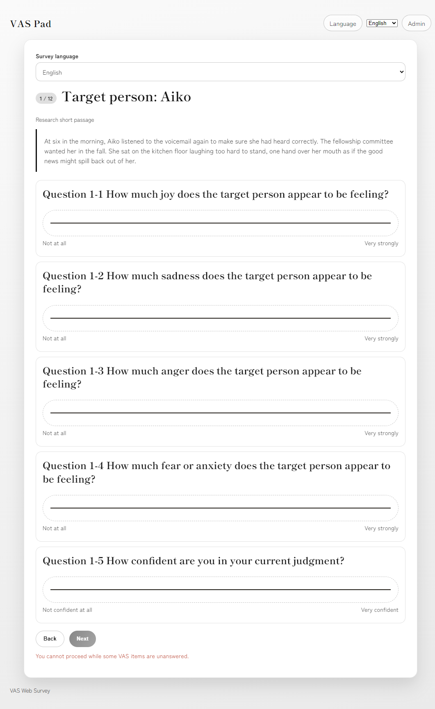
Respondent-side stimulus and VAS screen
Respondent journey: screens users actually see

1. Consent
Read, agree, or decline
Read, agree, or decline
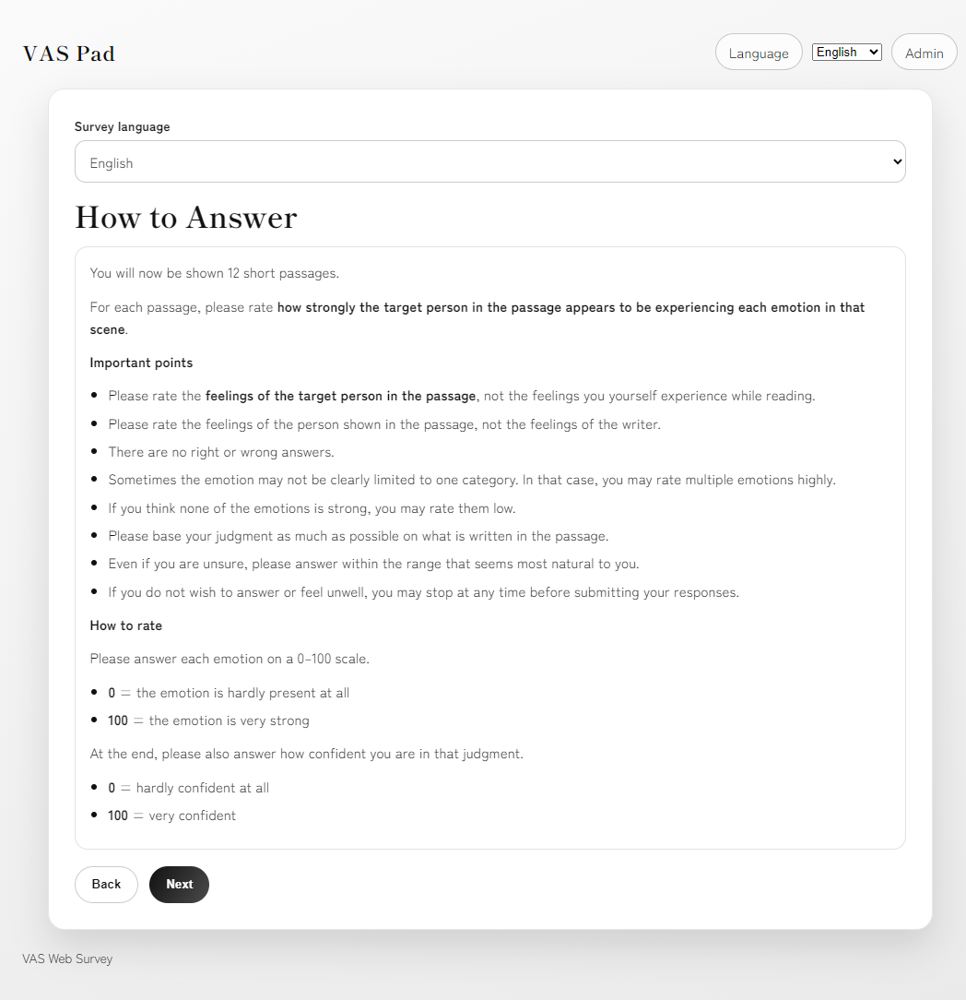
2. Instructions
Target, endpoints, confidence
Target, endpoints, confidence
3. VAS response
Stimulus and common items
Stimulus and common items
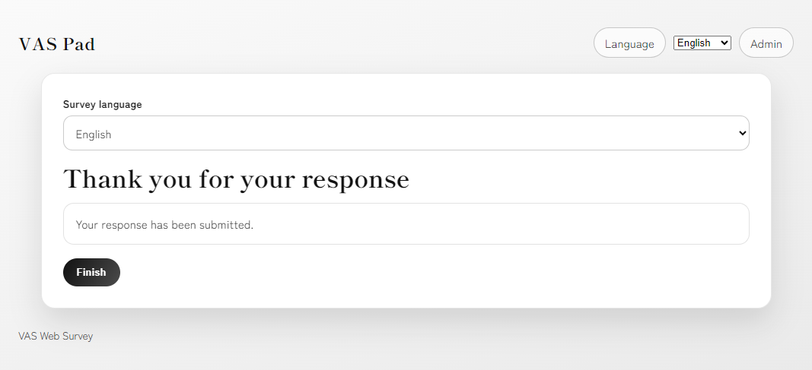
4. Completion
Submission confirmed
Submission confirmed
The manual presents VAS Pad as a complete respondent experience, not only as an input widget.
Research ethics are built into the workflow
- Consent gate: declining participation stops the survey.
- Comprehension check: misunderstanding can be detected before responses.
- Required VAS answers: accidental missing values are reduced before submission.
- Data-policy transparency: consent text should match the research protocol and platform use.
<div class="message">VAS Pad supports ethical operation, but the researcher remains responsible for the approved content and data-management policy.</div>
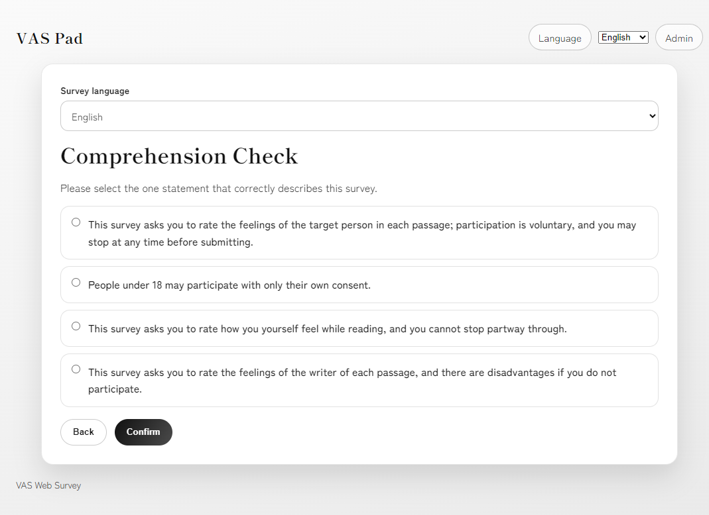
Comprehension check
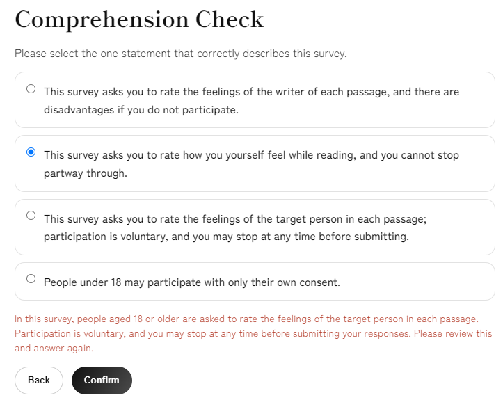
Wrong-answer guidance
Multilingual use: two separate language settings
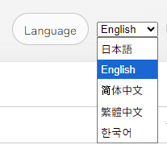
Interface language selector
| Setting | Main content affected |
|---|---|
| Interface language | Navigation, admin page, system-interface elements |
| Survey language | Consent text, instructions, comprehension check, stimuli, VAS labels, messages |
Multilingual use: one structure, multiple languages
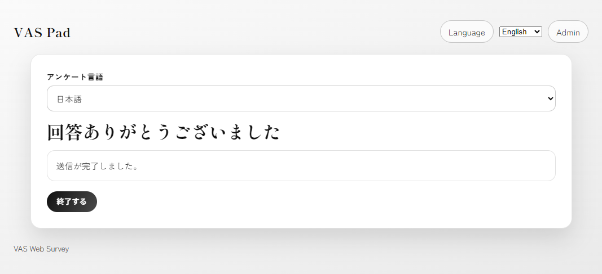
Japanese survey
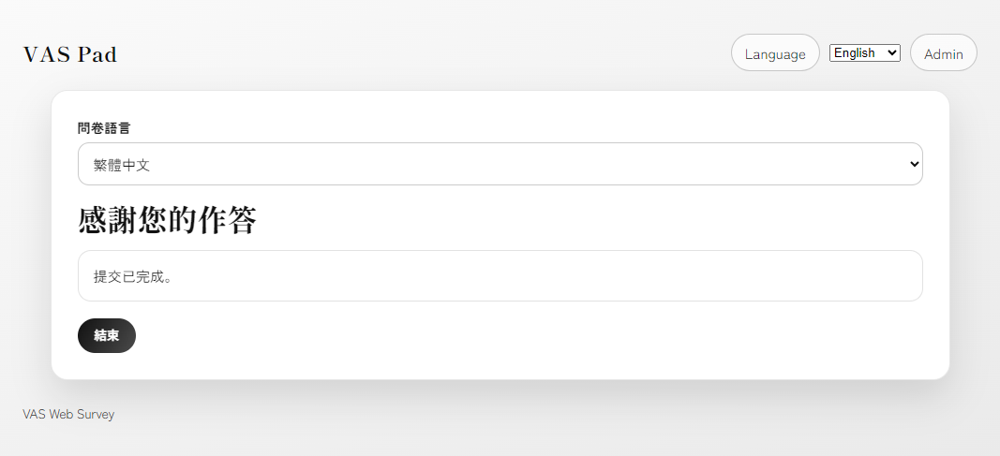
Traditional Chinese survey
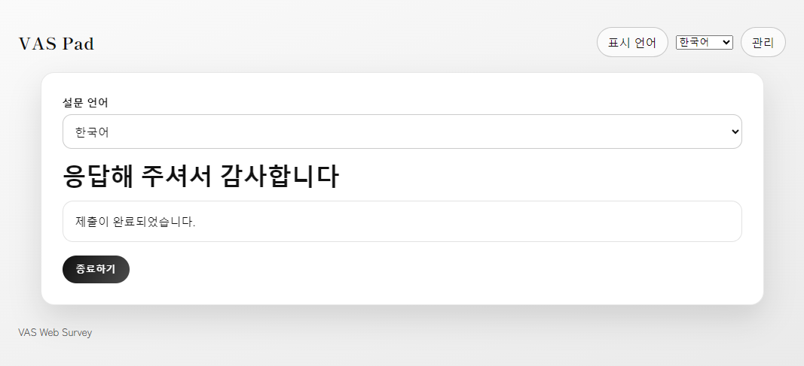
Korean interface and survey
One experiment structure can support multiple language versions.
One deployment can manage many experiments
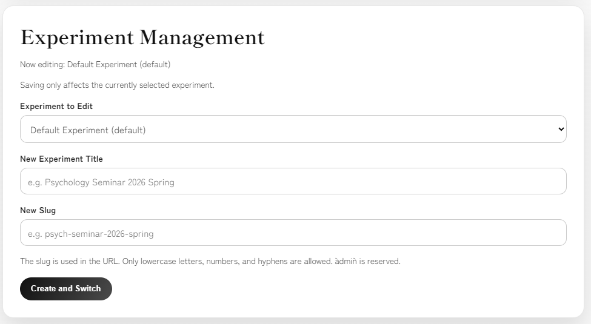
Create an experiment with a title and slug
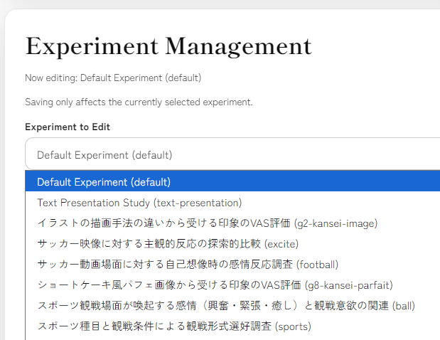
Switch the experiment being edited
Each experiment has its own settings, language content, and response data.
Each experiment has its own response URL
Default experiment: https://vaspad.web.app/
Other experiment: https://vaspad.web.app/{slug}
Example slug: text-presentation
Example response URL: https://vaspad.web.app/text-presentation
Do not distribute only the top-level URL when the intended experiment uses a slug.
Authoring: turn a protocol into a reusable VAS study
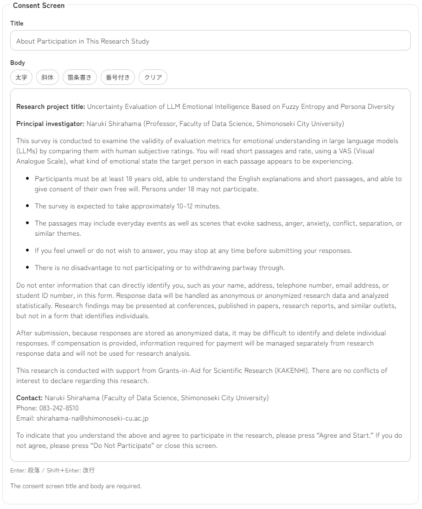
Consent screen
Purpose, withdrawal, data handling
Purpose, withdrawal, data handling
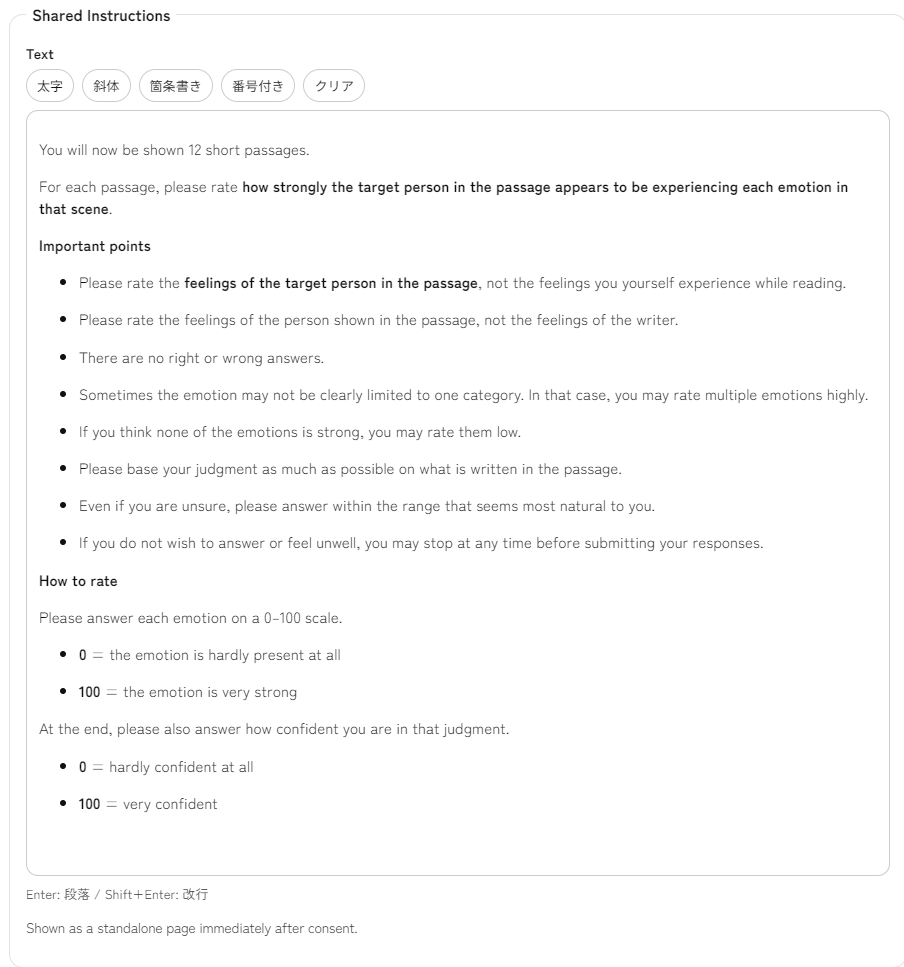
Shared instructions
Target, endpoints, difficult judgments
Target, endpoints, difficult judgments
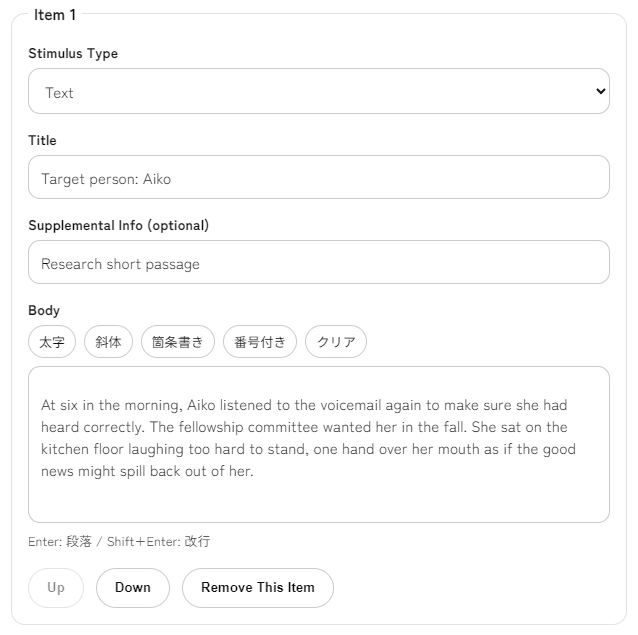
Stimuli
Text, YouTube video, or image
Text, YouTube video, or image
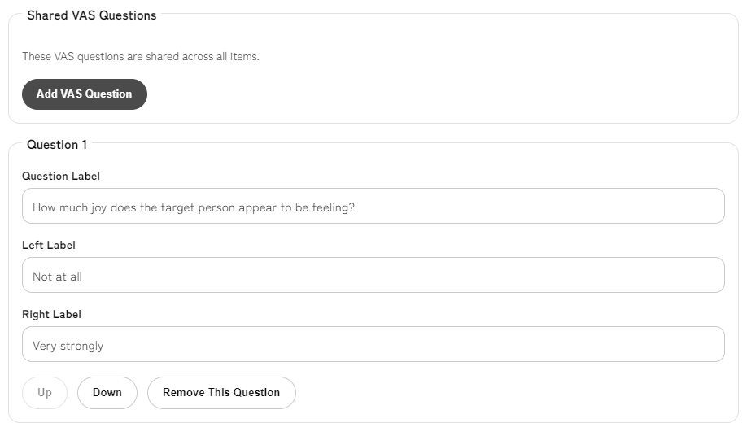
VAS questions
Question label and endpoint labels
Question label and endpoint labels
Reproducibility: JSON settings and CSV responses
Design experiment
→
Save settings
→
Export JSON
→
Collect responses
→
Download CSV
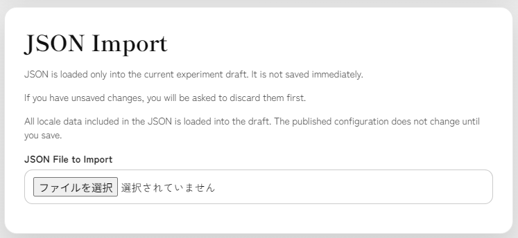
JSON import
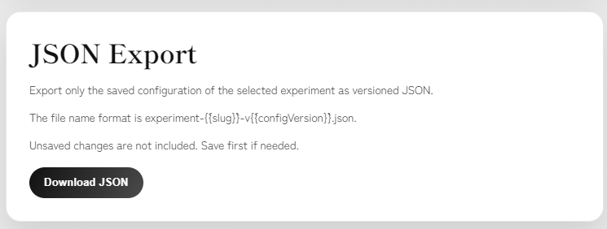
JSON export
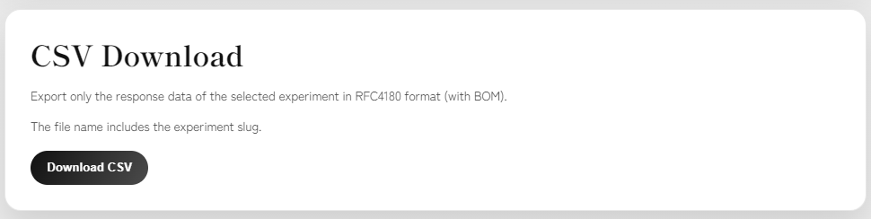
CSV download
JSON supports backup, duplication, version management, and AI-assisted editing; CSV supports statistical analysis and visualization.
Use case 1: human VAS data for LLM evaluation
Research
Human VAS data for LLM emotion evaluation
Human VAS data for LLM emotion evaluation
- Literary texts or conversational materials as stimuli
- Fine-grained ratings such as interest, surprise, sadness, anger, and confidence
- Consent, comprehension check, anonymous response management, and CSV export
Use case 2: a complete data science project cycle
Education
Data science project exercise
Data science project exercise
- Students configure experiments and collect responses
- JSON settings, response CSV files, notebooks, visualization, and reports
- A full cycle from survey design to data analysis
Operating checklist for adopters
- Create or select the correct experiment.
- Set editing locale, default locale, and published locales.
- Edit consent, instructions, and comprehension check.
- Register stimuli and shared VAS questions.
- Select Save, then distribute the correct slug URL.
- Export JSON before operation; download CSV after collection.
<div class="takeaway">Most failures are operational: wrong experiment, wrong language, unsaved edits, or wrong response URL.</div>
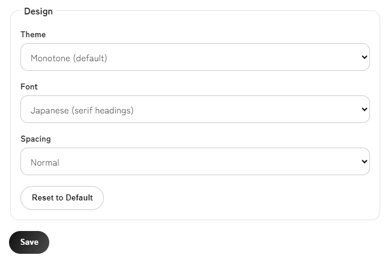
The Save button stores all current edits for the selected experiment.